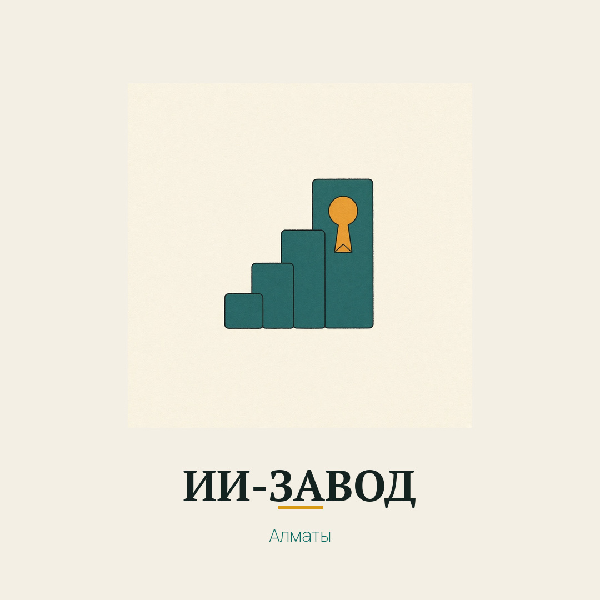
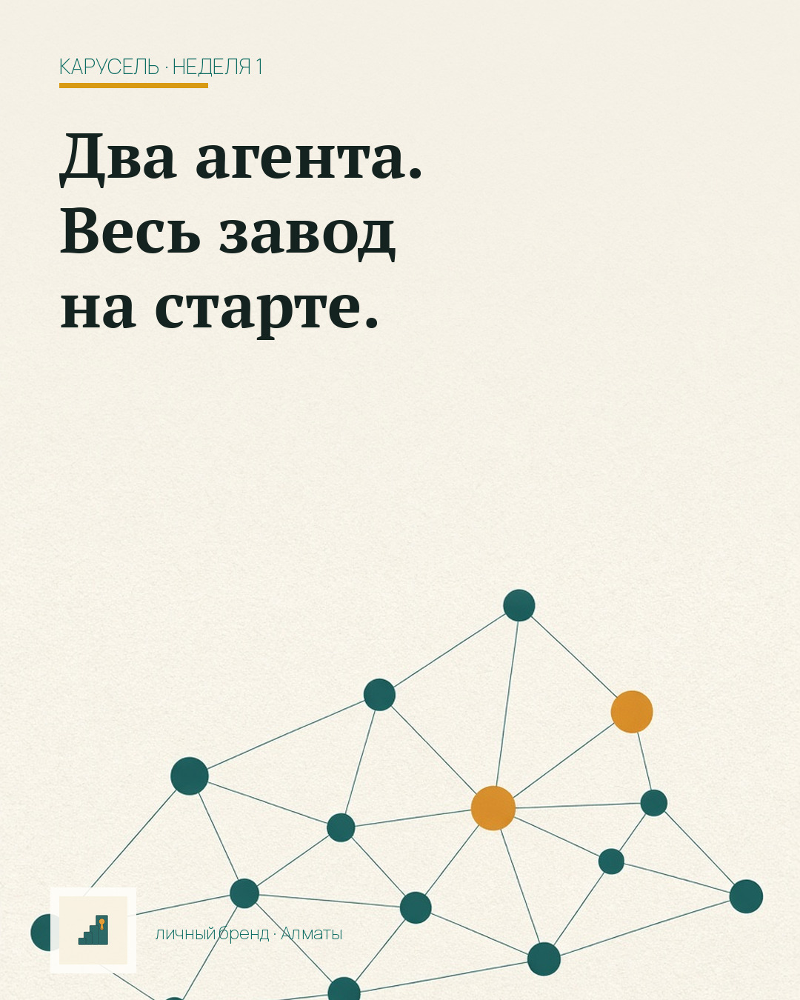
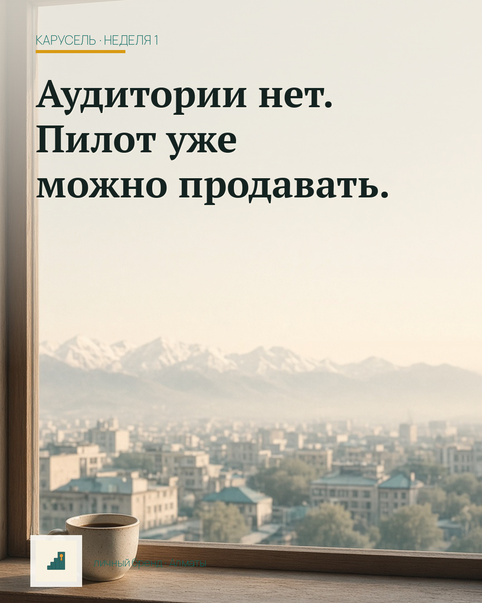
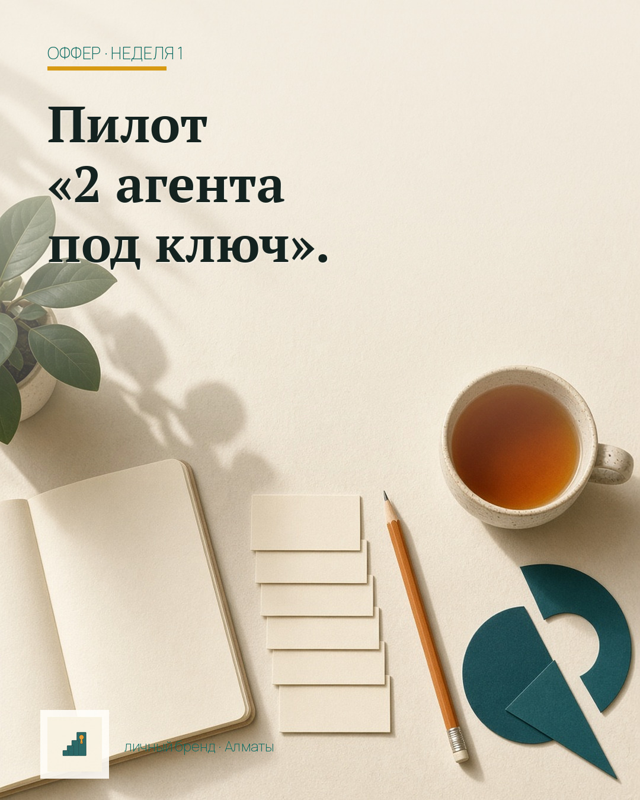
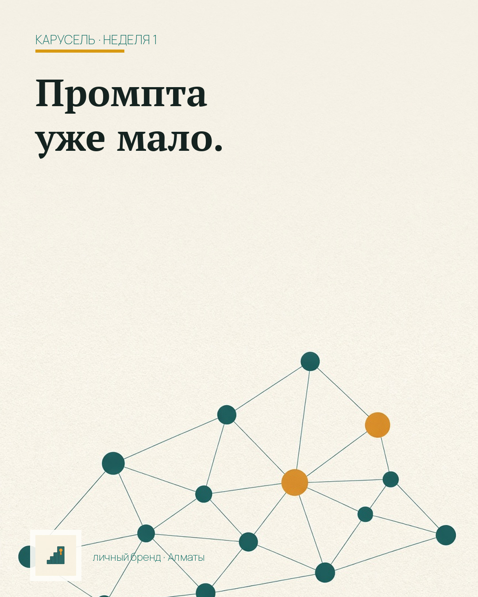
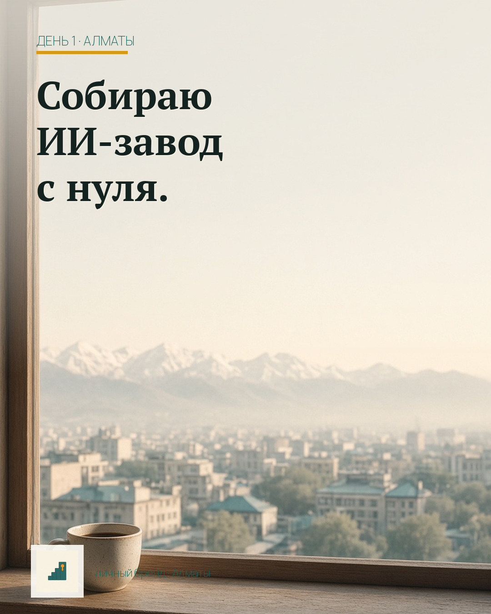

Сначала профиль

Аватар: знак завода, не портрет. Файл: img/avatar-ii-zavod.jpg
Обложки каруселей
1080×1350, заголовок наложен кодом шрифтом PT Serif. Фон сгенерирован, текст — наш, кириллица читается.





Десять материалов
| День | Формат | Хук | Текст |
|---|---|---|---|
| Пн 16.11 | Reels | Собираю ИИ контент-завод с нуля. День 1. | открыть |
| Пн 16.11 | Stories | Сегодня день 1. Собираю ИИ-завод с нуля. | открыть |
| Вт 17.11 | Карусель | Два агента. Весь завод на старте. | открыть |
| Ср 18.11 | Reels | За неделю агентам дали новые руки. Что из этого кладу в завод — а что пока не про Алматы. | открыть |
| Чт 19.11 | Карусель | Аудитории нет. Пилот уже можно продавать. | открыть |
| Пт 20.11 | Reels | Лица в кадре не будет. Зато будет экран и голос. | открыть |
| Сб 21.11 | Карусель | Пилот «2 агента под ключ»: что входит и как платить. | открыть |
| Сб 21.11 | Stories | Если смотрите не первый день — вот как со мной начать. | открыть |
| Вс 22.11 | Карусель | Промпта уже мало. Агент должен сам заворачивать пластик. | открыть |
| Вс 22.11 | Reels | День 7. Что собрал и кому написал. | открыть |
В браузере файлы .md откроются как обычный текст — так и задумано: их удобно копировать в заметки и в агента. Полные сценарии, титры, подписи и хештеги — внутри файлов.